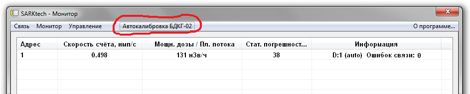
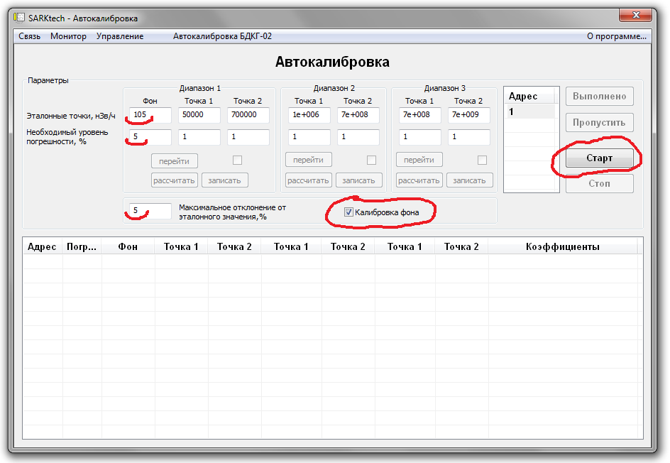
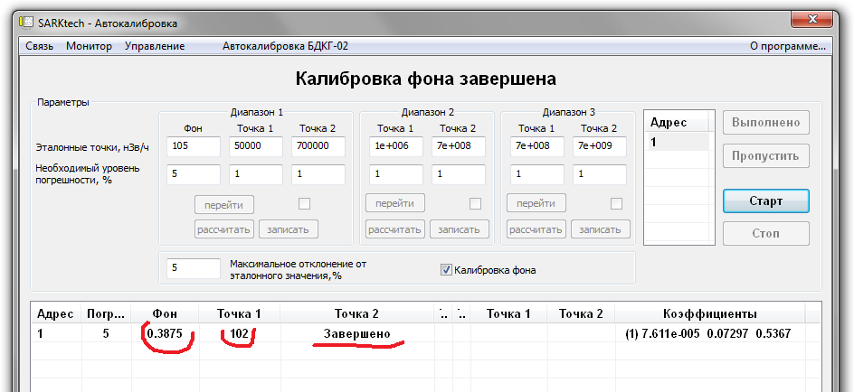
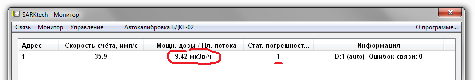
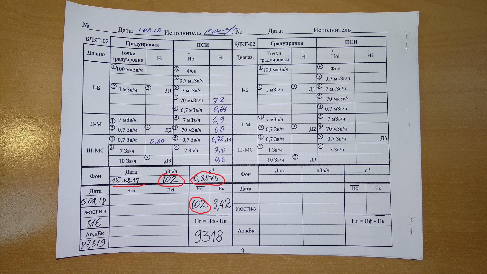
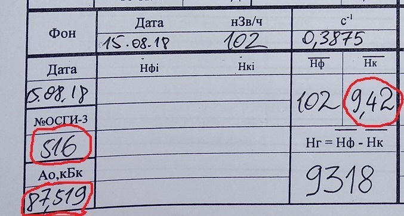
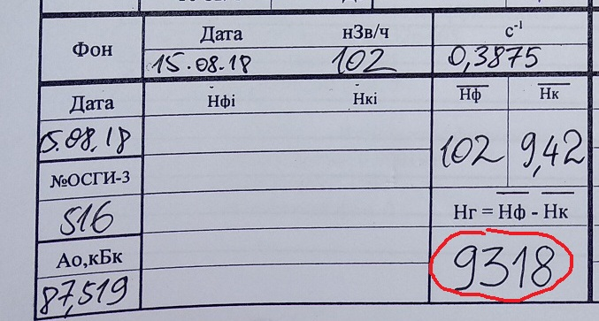

БДКГ-02
Запустить SARKtech, выбрать пункт "Автокалибровка" (потребуется ввод пароля)

Обязательно поставить флажок "Калибровка фона"
, иначе слетит к чертям вся настройка линейки
- Выставить фон ("Эталонные точки") — 100 (или 105)
- Необходимый уровень погрешности — 5
- Макимальное отклонение — 5
- Нажать Старт

Дождаться, когда напротив подключенного адреса появится надпись "Завершено".
Блок можно отключать. Значение "Фон" и "Точка 1" записать в паспорт




